MODUAL:1 ASSIGNMENT OF HTML
Tags and Elements are not the same things.
The HTML tag is just an opening or closing Tag.
For example < p > is starting tag of a paragraph and < /p > is closing tag of the same paragraph but < p >This is paragraph < /p > This is a paragraph Element.
TAG=Which comes between < Angular Brackets >
Element=Start Tag-Some Content-End Tag.

HTML tags are used to hold the HTML element. HTML element holds the content. HTML attributes are used to describe the characteristic of an HTML element in detail. HTML tag starts with < and ends with > Whatever written within a HTML tag are HTML elements.
HTML attributes are found only in the starting tag.
HTML attributes specify various additional properties to the existing HTML element.
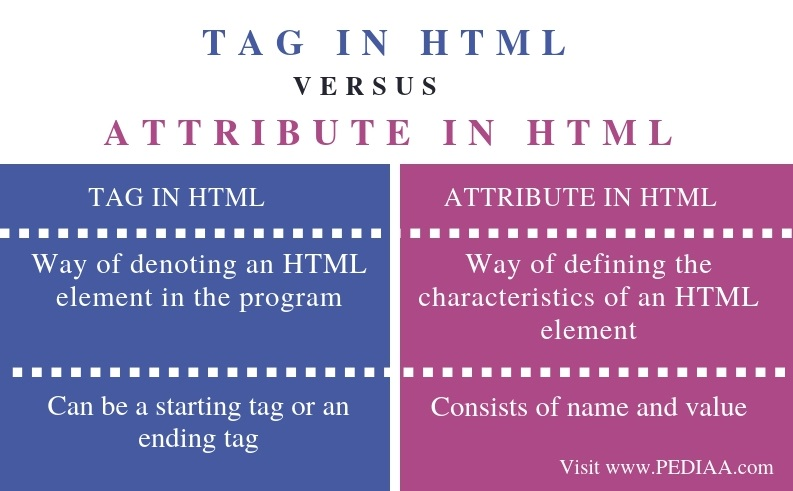Most but not all elements can have content and the content can include elements with content.Elements are not required to have content, but some elements cannot have content. This are called void elements. For example, the < br > tag represents a line break and cannot have any content.
A void element is an element whose content model never allows it to have contents under any circumstances. Void elements can have attributes. The following is a complete list of the void elements in HTML : area , base , br , col , command , embed , hr , img , input , keygen , link , meta , param , source , track , wbr.
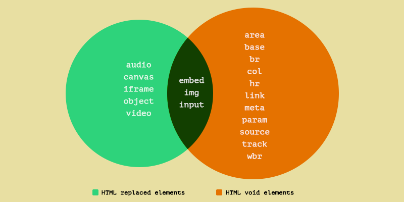An HTML entity is a piece of text ("string") that begins with an ampersand (&) and ends with a semicolon (;). Entities are frequently used to display reserved characters (which would otherwise be interpreted as HTML code), and invisible characters (like non-breaking spaces). You can also use them in place of other characters that are difficult to type with a standard keyboard.
&lT; stands for lesser than (<) symbol and,the & gt; sign stands for greater than (>) symbol
<HTML Entity> are preoccupied/Reserved symbols which are used in html tags and elements. for using them as a symbol we have
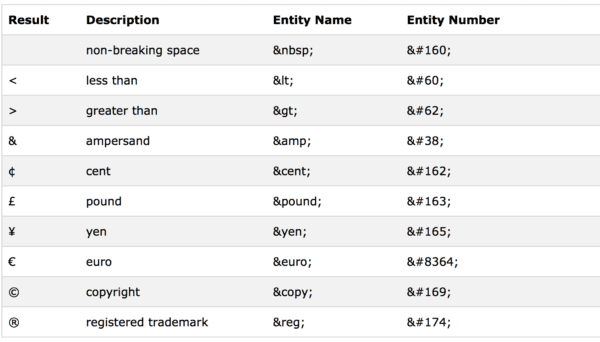List are of three types.
1)Ordered List or Numbered List (ol)
2)Unordered List or Bulleted List (ul)
3)Discription List or Detailed List (dl)
The class attribute specifies one or more classnames for an element. The class attribute is mostly used to point to a class in a style sheet. However, it can also be used by a JavaScript (via the HTML DOM) to make changes to HTML elements with a specified class.
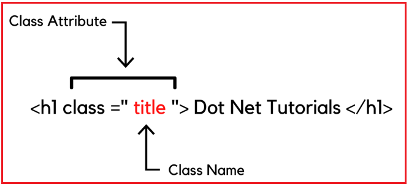Difference between id and class attribute: The only difference between them is that “id” is unique in a page and can only apply to at most one element, while “class” selector can apply to multiple elements.
"ID" is unique in a page and can only apply to at most one element.
"Class" selector can apply to multiple elements.

There are multiple formatting tags in html
For Example:
b - Bold text
strong - Important text
i - Italic text
em - Emphasized text
mark - Marked text
small - Smaller text
del - Deleted text
ins - Inserted text
sub - Subscript text
sup - Superscript text
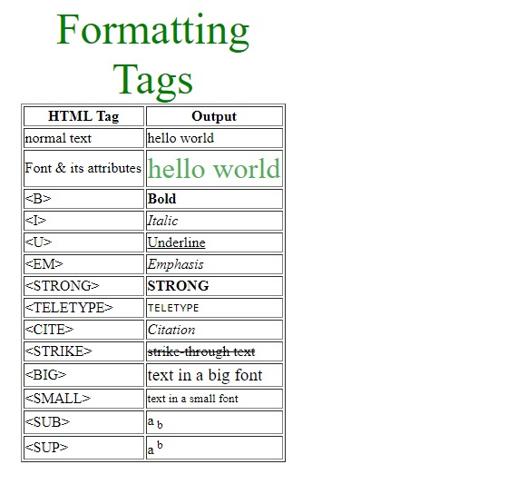Cellpadding basically defines the space present between a table cell's border and the content present in it.
Cellspacing basically defines the space present between individual adjacent cells.
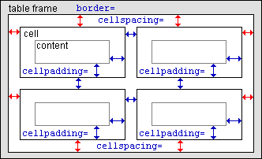It can be done by using the rowspan and colspan attribute in HTML. The rowspan is used to merge or combine the number of cells in a row whereas the colspan is used to merge column cells in a table.
The rowspan is used to merge or combine the number of cells in a row
the colspan is used to merge column cells in a table
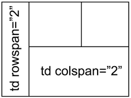Block-level elements always start from a new line. And Inline elements never start from a new line. Block-level elements cover space from left to right as far as it can go. And Inline elements only cover the space as bounded by the tags in the HTML element.
A block-level element always starts on a new line, and the browsers automatically add some space (a margin) before and after the element.
A block-level element always takes up the full width available (stretches out to the left and right as far as it can).
Two commonly used block-level elements are: < p> and < div>.
The < p> element defines a paragraph in an HTML document.
The < div> element defines a division or a section in an HTML document.
The < div> element is a block-level element.
An inline element does not start on a new line.
An inline element only takes up as much width as necessary.
The < span> element is a inline element.
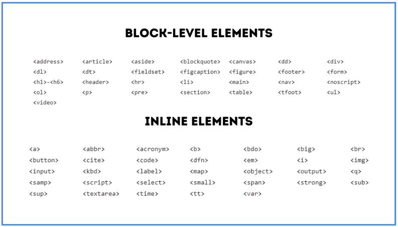Use the < a> element to define a link.
Use the href attribute to define the link address.
Use the target attribute to define where to open the linked document.
Use the < img> element (inside < a> ) to use an image as a link.
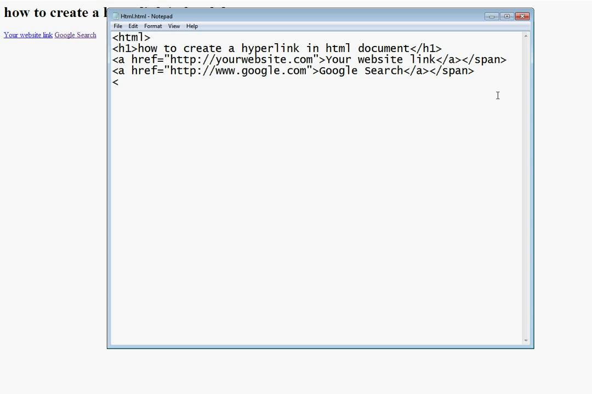An inline frame (iframe) is a HTML element that loads another HTML page within the document. It essentially puts another webpage within the parent page. They are commonly used for advertisements, embedded videos, web analytics and interactive content.
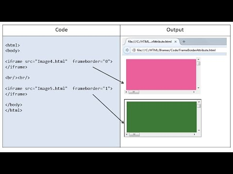The < span> tag is an inline container used to mark up a part of a text, or a part of a document.
Span=Standardized portfolio analysis of risk.
< span> it takes that much space which is required for content.
< span> is an inline element.
Example of span tag:
Divyesh
In order to put a simple image on a web page, we use the < img>tag or element.
The most common & simple way to add background image is using the background image attribute inside the < body> tag.
The src attribute contains a URL pointing to the image you want to embed in the page.
Normal links are links which are there on the page and have not been clicked yet.
And the active links are those links, which have just been clicked at that instant.
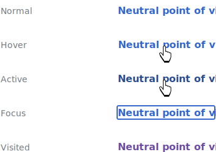There are three tags that can be used to separate the texts:
< br> tag Usually < br> tag is used to separate the line of text. It breaks the current line and conveys the flow to the next line.
< p> tag This contains the text in the form of a new paragraph.
< blockquote> tag It is used to define a large quoted section.
SVG stands for Scalable Vector Graphics. SVG is used to define graphics for the Web. SVG is a W3C recommendation.
The < svg> tag defines a container for SVG graphics. SVG has several methods for drawing paths, boxes, circles, text, and graphic images.
SVG=Scalable Vector Graphics

HTML is the standard markup language for creating web pages, while XHTML is a stricter and more standardized version of HTML. Both HTML and XHTML include a wide range of features, such as support for multimedia, styling, and scripting.
HTML and XHTML are two of the most popular markup languages used for developing web pages and applications.
\HTML and XHTML both have features to create rich and interactive web pages and applications.
Some of the most popular HTML and XHTML features include:
(A)Support for multimedia: Both HTML and XHTML support various forms of multimedia, such as images, video, and audio. HTML also supports animated images and graphics.
(B)Styling: Both HTML and XHTML offer a wide range of options for styling web pages. CSS (Cascading Style Sheets) is the most commonly used style sheet language, and it can be used to style both HTML and XHTML documents.
(C)Scripting: HTML and XHTML both support various forms of scripting, such as JavaScript. Scripting can be used to add interactivity to web pages and applications.>
(D)Forms: Forms are one of the most important features of HTML and XHTML. Forms allow users to input data, which can then be processed by a server-side script.
(E)Tables: Tables are another important feature of HTML and XHTML. Tables can be used to display tabular data, such as product information or financial data.
(F)Links: Links are one of the most basic features of HTML and XHTML. Links allow users to navigate between web pages.
(G)Metadata: Metadata is information about a web page or document. It can include information such as the author, keywords, and description.
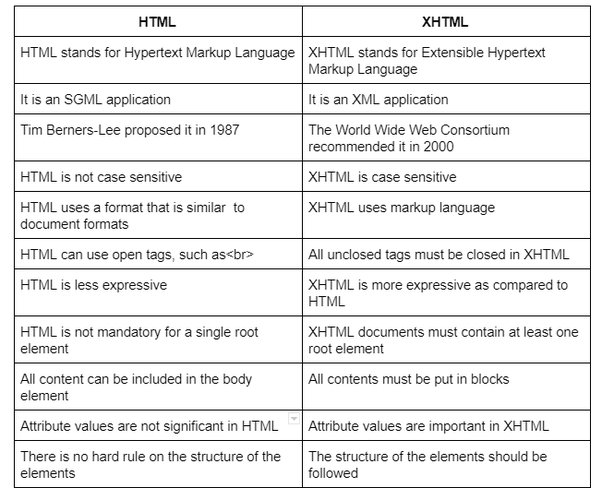Physical and Logical tags are used in HTML for better visibility and understanding of the text by the user on the web page. However, both tags differ from each other as suggested by their names.
(A) Logical Tags are used in HTML to display the text according to the logical styles. Following are the Logical tags commonly used in HTML.
LOGICAL TAGS=< abbr>, < acronym>, < address>, < cite>, < code>, < blockquote>, < del>, < dfn>, < ins>, < kbd>, < pre>, < q>, < samp>, < stonge>, < var>.
(B) Physical Tags are used in HTML to provide actual physical formatting to the text. Following are the Physical tags commonly used in HTML.
PHYSICAL TAGS=< b>, < big>, < i>, < small>, < sup>, < sub>, < tt>, < u>.
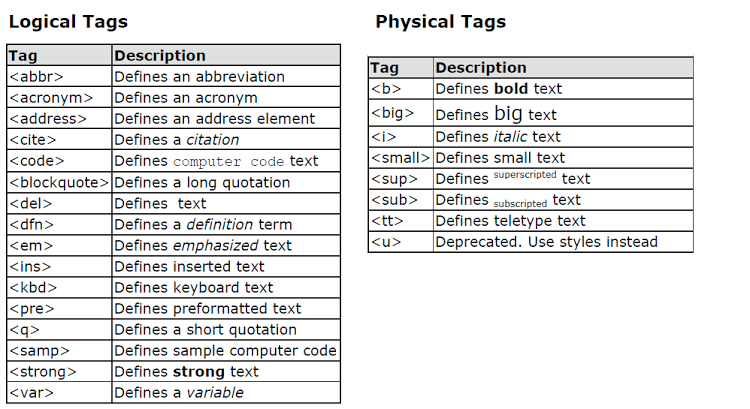